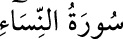

<a name=1260></a><br/>
<b>4- en-NİSÂ SÛRESİ</b><br/>
<i><b>Hicretten sonra Medine’de nâzil olmuştur. 176 âyettir.<br/>“Nisâ” kadınlar demektir. Bu sûrede daha çok kadından, cemiyet içinde</b></i><br/>
<i><b>kadınların hukukî ve içtimaî yer ve değerlendirmelerinden bahsedildiği için adına<br/>“Nisâ” denmiştir.</b></i><br/>
